Introduction
"Arduino is an open-source electronics prototyping platform based on flexible, easy-to-use hardware and software. It is intended for artists, designers, hobbyists, and anyone interested in creating interactive objects or environments."
The mother site for Arduino is http://arduino.cc.
Getting Started with Arduino UNO
Step 0: Buy an Arduino Board
Arduino Board comes in many flavors. A minimal "Arduino UNO" board for starter costs less than US$5 and can be purchased thru many online stores. I suggest that you buy an "Arduino Starter Kit", which comes with an Arduino UNO board and various electronics components (LEDs, resistors, transistors, motors, breadboard, wires, etc.) for you to start some simple experiments, for US$20-40.
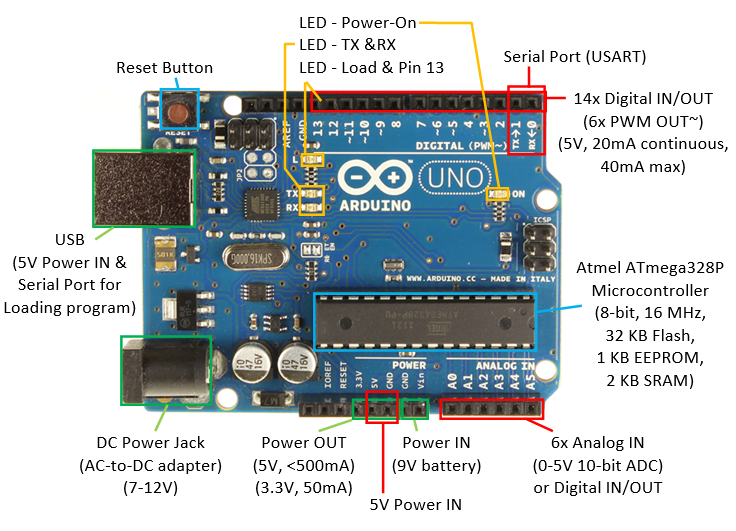An Arduino UNO board contains the following:
- An Atmel (bought over by Microchip in 2016) ATmega328P 8-bit Micro-controller (Complete Data-sheet - 442 pages, Summary - 24 pages), with 32KB of Flash memory for programs, 2KB of SRAM for data, and 1KB of EEPROM for non-volatile data. The clock speed is 16MHz.
- Power IN: The power to Arduino board can be supplied via:
- USB Connector (5V): also double as serial port to communicate with the computer (e.g., for loading program).
- DC Power Jack (7-12V via AC-to-DC adapter or battery pack).
- Vin/GND pins (7-12V with 9V battery).
- Power by 5V supply: Although the 5V pin is meant for powering external components, you could power the Arduino via the 5V/GND pins. This is not recommended because you could get the polarity and voltage wrong and damage your arduino. A better way is to connect your 5V power supply to the USB connector. Get an old USB cable, cut the plug off the other end, and connect Red wire to 5V supply and Black wire to GND. USB connector is better than the crappy header pins and you can't mess up the polarity.
- Power OUT (5V and 3.3V pins): The board regulated 5V and 3.3V output for powering external components.
- If the board is powered via USB, the total current available for "on-board" and "external use via the 5V power out pin" is 500mA (and much less for the other power sources).
- The current available at 3.3V pin is 50mA.
- On-board Built-in LEDs: These LEDs are useful in debugging.
- Power-on LED: indicate that the Arduino board is receiving power.
- Load cum Pin-13 LED: Flicker during sketch upload. Also connected to Digital Pin 13 for program testing and debugging.
- TX and RX LEDs: indicate communication between the Arduino board and your computer. Flicker during sketch upload and serial communication.
- Reset Button: to reset/restart the program.
- 14x Digital INPUT/OUTPUT pins (numbered from 0 to 13):
- Use function
pinMode(0-13, INPUT|OUTPUT)to configure the pin for input or output; anddigitalRead(0-13)ordigitalWrite(0-13, HIGH|LOW)to read or write. - Each pin operates at 5V at
HIGHand 0V atLOW. It can provide or receive a maximum current of 40mA, but only 20mA continuous, which is merely sufficient to drive a single-color LED @ 20mA for full brightness continuously. - Total current for the chipset shall not exceed 200mA, i.e., driving 10 single-color LEDs @ 20mA.
- Pin 13: There is a built-in LED connected to Pin 13, under Pin 13. It is useful for debugging.
- PWM Output: 6 of the pins (pins 3, 5, 6, 9, 10 and 11, marked with ~) can produce PWM (Pulse Width Modulated) output (i.e., square wave) via function
analogWrite(3|5|6|9|10|11, dutyCycle)with duty cycle between 0 (off) to 255 (on). The PWM square wave at various duty cycles (as illustrated below) can be used to simulate "analog" output (e.g., to control the brightness of LED or speed of motor). The frequency of PWM is 980Hz on pins 5 and 6; and 490Hz (half) for other pins. 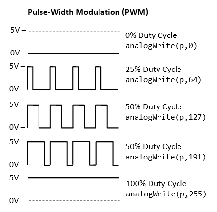
- Use function
- 6x Analog INPUT pins (A0 to A5): By default, each pin can measure
between 0V to 5V with 10-bit of resolution via a analog-to-digital converter (ADC). The upper range can be
changed using the AREF pin and
analogReference()function. These analog pins are labeled A0 to A5 (whereas digital pins are labeled 0 to 13). We can usepinMode(A0-A5, INPUT)(optional but nice to have) andanalogRead(A0-A5)to read the 10-bit analog input[0,1023].
The primary purpose of the analog input pins A0-A5 is to read analog input. However, these pins can also function exactly like digital pins 0-13 for digital input/output. We can usepinMode(A0-A5, INPUT/OUTPUT)to set its I/O mode, and anddigitalRead(A0-A5)ordigitalWrite(A0-A5, HIGH|LOW)to read or write. - 1x Programmable Serial Port (USART): Use Digital Pin 0 for RX and Digital Pin 1 for TX; or the USB connection (for communicating with the PC such as loading program).
- Interrupts: Pins 2 and 3 can be used for "external" interrupt and mapped to
INT0andINT1. All 20 pins (14x digital + 6x analog) can be used for "pin-change" interrupt.
Brief summary of digital/analog pins and read/write functions:
pinMode(0-13|A0-A5, INPUT|OUTPUT): Set the pin toINPUTorOUTPUT. Digital pins are numbered from 0 to 13. Analog pins are numbered A0 to A5.digitalRead(0-13|A0-A5),digitalWrite(0-13|A0-A5, HIGH|LOW): applicable to all digital and analog pins.analogWrite(3|5|6|9|10|11, dutyCycle): applicable to PWM digital pins only, wheredutyCycle=[0,255], 0 for low and 255 for high.analogRead(A0-A5): read 10-bit input in the range of [0, 1023] for 0-5V from analog input pins.
Protecting the Arduino Board:
- Many of my students throw the Arduino board around like a soft toy, and short the connections underneath. You can buy a plaster casting or simply use masking tape to cover the base of the Arduino board.
- Discount the power/USB cable to the Arduino board, when you are connecting the circuitry. This also protect you precious PC!
Step 1: Download the Arduino IDE
- Download the Arduino IDE from Arduino mother site @ http://arduino.cc/en/Main/Software, choose the version that matches your operating platform (e.g., Windows or Mac OS X) and download the zip file (e.g.,
arduino-1.8.x-windows.zip). - Unzip the downloaded file into a directory of your choice (e.g., "
D:\myProject"). The Arduino Development Kit will be unzipped into "D:\myProject\arduino-1.8.x". I shall denote the installed directory as$ARDUINO_HOMEin this article. Arduino SDK is "arduino.exe".
Step 2: Plug-in the Arduino Board to Install the Driver (Good Luck Needed!!!)
- Plug in the Arduino board with the USB cable to the computer. You shall see the "POWER ON" LED lights up (in green or orange).
- (For Windows) Install the driver. Run "Control Panel" ⇒ "Device Manager" (right-click and "run as administrator") ⇒ Look
for and right-click on the "Unknown device" (or under "Ports (COM & LPT)") ⇒ "Update Device Driver" ⇒
Set to
$ARDUINO_HOME\drivers(i.e., the unzipped Arduino directory). Ignore the warning message. The device shall be installed as "Arduino Uno (COMxx)" under "Ports (COM & LPT)".
If your board is not detected by your computer (i.e., there is no unknown device in the above step), try connecting to another USB port; try another Arduino Board; try your Arduino Board on another computer; and so on... But don't try to spend days fixing the Arduino driver!!! - (For Mac OS X) [TODO]
- (For Ubuntu) [TODO]
Step 3: Launch the Arduino SDK to Write your First Program
- Run "
arduino.exe" (at$ARDUINO_HOME). - Copy the following program (called sketch in Arduino) into the editor panel:
#define BUILTIN_LED_PIN 13 // A Built-in LED connected to digital Pin 13 /* * Setup() runs only once for initialization */ void setup() { pinMode(BUILTIN_LED_PIN, OUTPUT); // Set Pin 13 (digital) to OUTPUT mode } /* * loop() repeats forever after setup() completed */ void loop() { digitalWrite(BUILTIN_LED_PIN, HIGH); // Set Pin 13 to HIGH (5V) to turn ON its built-in LED delay(1000); // Delay in msec digitalWrite(BUILTIN_LED_PIN, LOW); // Set Pin 13 to LOW (0V) to turn OFF its built-in LED delay(1000); // Delay in msec }
- Click "Verify" button (or "Sketch" menu ⇒ "Verify/Compile"; or Ctrl-R) to compile the code.
- Click "Upload" button (or "File" menu ⇒ "Upload"; or Ctrl-U) to
upload the code onto the Arduino board. You should see the LED
under Pin 13 blinking (in orange) indicating program loading.
If you see the error message "avrdude: stk500_getsync(): not in sync: resp=0x30". Goto menu "Tool" menu ⇒ "Serial Port" ⇒ choose the correct "COMx". You can verify your COM port via "Control Panel" ⇒ "Device Manager" ⇒ Take note of the COM port setting for "Arduino UNO". - After the program is loaded, you shall see the Pin-13 LED (under the Pin 13, same LED as program load) turning on and off every 1 second, forever.
Dissecting the Program
- An arduino program (called sketch) has at least two functions:
setup()which runs once at startup (or reset) for initialization tasks; andloop()which repeats forever aftersetup()completed. - The
pinMode(pinNumber, INPUT|OUTPUT)function sets thepinNumberto eitherINPUTorOUTPUT. - The
digitalWrite(pinNumber, HIGH|LOW)function sets the digital output pin to eitherHIGH(5V) orLOW(0V). Take note that a digital output pin can provide a maximum current of 40mA or 20mA continuously. - The
#defineis resolved at compiled time, which may reduce the SRAM footprint (comparing of using a variable).
Examples
Arduino IDE provides many examples, under "File" ⇒ "Examples", or "File" ⇒ "Sketchbook".
For example, the above codes can be found under "File" ⇒ "Examples" ⇒ "Built-in Examples" ⇒ "01.Basics" ⇒ "Blink".
Processing Sketchbook Software
Arduino IDE is based on processing (@ https://processing.org/), which "is a flexible software sketchbook and a language for learning how to code within the context of the visual arts".
Get Set, but Before Go...
Electronic Tools and Equipment
MUST HAVE
- Digital Multimeter (You can buy a cheap multimeter for less than $20). Find a YouTube video to learn how to use the digital multimeter.
You need to know:
- How to measure resistance.
- How to do Continuity Check.
- How to measure DC voltage.
- How to measure DC current (in series).
- Toolbox: Screw drivers (flat and cross), wire cutter, wire stripper, plier, Power main test pen/Screw driver, Insulation tapes, masking tapes (for marking, sealing), 22-Gauge solid wires (red, black and some colors), breadboard, etc.
- Soldering Station (with stand, third hand, wet sponge, solder sucker, solder wick): Read "How to Solder: Through-Hole Soldering", or find a YouTube video to learn on how to do soldering. For soldering iron with a temperature control, set it to about 350-370°C to begin with.
Breadboard is meant for prototyping only. You need to solder on PCB for your final product!
NICE to HAVE
- DC Power Supply (e.g., 160W Digital Bench Power Supply, 0 to 32V DC, 0 to 5A) - You cannot survive with batteries.
You need to know:- How to set the output DC voltage.
- How to set the output DC current LIMIT (to avoid generating smoke!)
- How to read the voltage and current output values.
- Isolated: each supply operates as completely separate and independent unit. This is the most frequently-used mode.
- Parallel: output from slave unit is channeled into the master unit, to increase it current capability.
- Series: Slave's positive output terminal is internally connected to master's negative output terminal.
The DC power supplies usually function in constant-voltage mode (which maintains constant voltage). You can set the current limit for the supplies (to protect your circuitry). Once the current limit is reached, the supply functions in constant-current mode and will not supply more current.
For production, you can get a switching DC power supply at reasonably low cost. You need to know your voltage (5V, 12V, etc.) and the max current rating (3A, 5A, 10A, 50A, etc.) 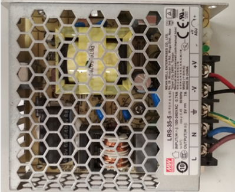
Really NICE to Have
- Oscilloscope
- Function Generator
Etiquette
Please observe good electronic work etiquette:
- Do not rest the Arduino Board on a metal surface, unless you want to generate smoke! Paste an insulating masking tape below or use a proper plastic (or wooden) cover.
- Disconnect the power to the Arduino board when you are patching the circuit, to prevent short-circuiting and burning the Arduino board.
- BE PATIENCE! BE SYSTEMATIC! DON'T CUT CORNER!
- Tidy up your workbench. Place all your components and loose parts in boxes.
- Wires come in COLOR for purpose. For DC circuit, use RED for power and BLACK for ground. Color-blind, unfortunately, will not pass the medical examination to practice electronics (because we use color codes in electronics).
- Use the correct cables (gauge number) and connectors for your project.
- Trim your connecting wires to the right (minimal) length for your final product - you are not using them to catch fish.
- Draw proper design diagram, circuit diagram, connection diagram, etc.
- Writing good programs. Comment your programming statements.
- "A craftsman is measured by his toolbox". Get and use the right tools.
- ......
LEDs
I shall follow the exercises in:
- "SparkFun Inventor's Kit (SIK) Experiment Guide - v4.0" (the latest version at the time of this writing) @ https://learn.sparkfun.com/tutorials/sparkfun-inventors-kit-experiment-guide---v40/introduction.
- The older version of "SparkFun Inventor's Kit (SIK) Guide for Arduino" @ https://www.sparkfun.com/products/retired/11227, with PDF User's Guide @ http://cdn.sparkfun.com/datasheets/Kits/SFE03-0012-SIK.Guide-300dpi-01.pdf.
- "Oomlout's Arduino Experimentation Kit (ARDX)" @http://www.oomlout.com/a/products/ardx/.
I shall provide more technical explanation and computation for my engineering students. You need the hardware components to do these exercises. I suggest you purchase an "Arduino Starter Kit" which comes with common electronic components.
LED Ex 1: Blinking LED (with a Current Limiting Resistor)
Reference: "SIK Circuit 1A: Blink an LED" or "Oomlout CIRC01 Getting Started"
Objective: To turn ON and OFF an LED repeatedly (blink) every second.
Components
- 1x LED (5mm Red or White). LED has polarity. The shorter leg with a flat spot is the cathode (-). The longer leg is the anode (+). You should also know how to use a digital multimeter to check the polarity of a diode.
- 1x 330Ω resistor.
Circuit Diagram
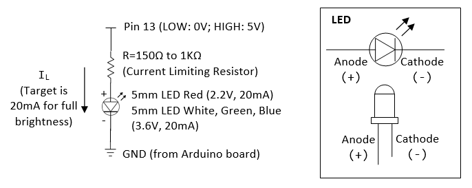Program
Run the program in "$ARDUINO_HOME\examples\01.Basics\Blink\Blink.ino", or the following:
/* * Blink: Turns ON an LED on for one second, then turn OFF for one second, repeatedly. */ #define LED_PIN 13 // Give it a name for easy referencing /* * setup() run once for initialization */ void setup() { pinMode(LED_PIN, OUTPUT); // initialize the digital pin as output } /* * loop() repeats forever after setup() completes */ void loop() { digitalWrite(LED_PIN, HIGH); // turn the LED ON by making the voltage HIGH (5V) delay(1000); // wait for the given millisecond digitalWrite(LED_PIN, LOW); // turn the LED OFF by making the voltage LOW (0V) delay(1000); // wait for the given millisecond }
- An arduino program (called sketch) has at least two functions:
setup()which runs once at startup (or reset) for initialization tasks; andloop()which repeats forever aftersetup(). - The program initializes (in
setup()) by setting Pin 13 to OUTPUT mode (viapinMode()), which could output a digital HIGH (5V) or LOW (0V). It then outputs a HIGH (5V), delays for 1000 msec (1 sec), outputs a LOW (0V), delays for 1000 msec, repeatedly (inloop()).
Dissecting the Circuit for Engineering Students
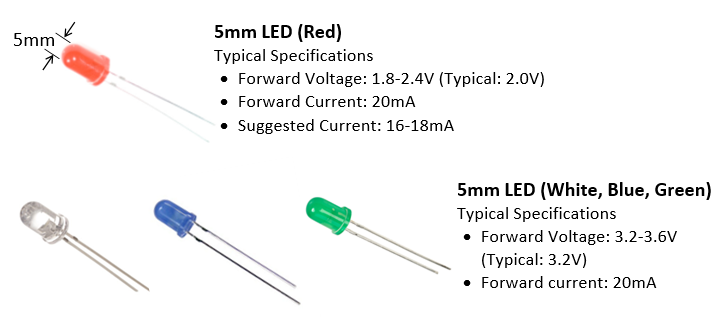- Unlike resistor, LEDs are non-linear devices and they do not follow Ohm's law. LEDs are treated as current devices with a constant voltage drop. The suggested forward current for a typical 5mm LED is 20mA to get its full brightness.
- In practical design, we treat LED's forward voltage as constant at 3.6V (for white, blue and green LED), or 2.2V (for red LED, see datasheet).
- We need to choose a resistor R (known as current limiting resistor) such that
IL=20mAflowing through the resistor and the LED. Suppose that the supply is 5V (digital pin 13 outputs 5V when it is set to HIGH),R=(5-3.6)V/20mA=70Ω(for white, green or blue LED) orR=(5-2.2)V/20mA=140Ω(for red LED). Using a higher resistor results in lower current, and thus a dimmer LED (or NOT lighting up). Using a lower resistor results in higher current. This wastes power and may burn the LED. In engineering design, this R value serves as a starting point. Observe the brightness, measure the voltage/current, then fine-tune the R value. - The power consumption of the LED is
20mA*3.6V=72mW(white, green, blue LED), or20mA*2.2V=44mW(red LED). Total power consumed is20mA*5V=100mW. - Take note that the Arduino's digital output pins provide a maximum current of 40mA (or 20mA of continuous current), which is sufficient to drive 1-2 LEDs in parallel (@ 20mA each), but not more than two LEDs to their full brightness.
- 2 LEDs in series has voltage drop of
(2.2 to 3.6)*2=4.4 to 7.2V. A 5V supply cannot drive more than 2 LEDs in series. We typically use a 12V supply to drive 3 LEDs in series (in some LED strips).
Practices for Engineering Students
Different LEDs from different manufacturers have different rating (forward current and forward voltage). Worst still, you will not be able to find the correct datasheet. So, dig out your multimeter and measure yourself!
Note: If you are given 330Ω resistor only, you can connect two in parallel to get 165Ω (by applying Ohm's law); three in parallel to get 110Ω.
- Set pin 13 to HIGH (to turn on the LED):
- Using a digital multimeter, measure the voltage at pin 13 and the voltage across the LED. To measure voltage, place the meter in parallel (as illustrated) and set it to measure 20V (or auto-range).

- Apply Ohm's law to compute the current flowing through the resistor (this same current flowing through the LED).
- Using a digital multimeter, measure this current and compare with the computed value. To measure current, BREAK the circuit and place the meter in SERIES (as illustrated) and set the meter to measure 200mA (or auto-range).

- For white LED with a 330Ω resistor, measured LED forward voltage = 2.77V, measured forward current = 5.9mA. Computed
IL=(5-2.77)/330=5.75mA. - For white LED with a 165Ω resistor, measured LED forward voltage = 2.85V, measured forward current = 10.6mA. Computed
IL=(5-2.85)/165=13mA. - For red LED with a 330Ω resistor, measured LED forward voltage = 1.90V, measured forward current = 8.4mA. Computed
IL=(5-1.90)/330=9.3mA. - For red LED with a 165Ω resistor, measured LED forward voltage = 1.95V, measured forward current = 15mA. Computed
IL=(5-1.95)/165=18.5mA. - Take note that the forward voltages measured are fairly constant; while the forward current and LED brightness changes.
- Using a digital multimeter, measure the voltage at pin 13 and the voltage across the LED. To measure voltage, place the meter in parallel (as illustrated) and set it to measure 20V (or auto-range).
- Set pin 13 to LOW (to turn off the LED). Repeat the above measurements.
- Repeat the above for RED, WHITE, GREEN and BLUE LEDs.
- Repeat the above for two LEDs in parallel.
- Repeat the above for two LEDs in series.
- Repeat the above for three LEDs in parallel.
LED Exercise 1a: Change the Blinking Time
To change the blinking rate, you can modify the delay, currently set at 1000 msec (or 1 sec).
LED Ex 2: Controlling the Brightness of a Single-Color LED via PWM
To control the brightness of the LED, use pin 9 (instead of pin 13),
which can produce a PWM (Pulse Width Modulation) square wave via
function analogWrite(pinNumber, dutyCycle) (PWM Tutorial). The dutyCycle sets the ON duration of the square wave, with value ranges from 0 (always OFF) to 255 (always ON).
Try the following program:
#define LED_PIN 9 // LED connected to digital PWM pin 9 #define DUTY_CYCLE 192 // Duty cycle for the PWM over [0,255] /* Setup() runs only once */ void setup() { pinMode(LED_PIN, OUTPUT); // Set to OUTPUT mode } /* loop() repeats forever */ void loop() { analogWrite(LED_PIN, DUTY_CYCLE); // Try other values from 0 to 255 delay(1000); // time delay in msec before repeat // Fade in from min to max in increments of 5 for (int fadeValue = 0 ; fadeValue <= 255; fadeValue += 5) { analogWrite(ledPin, fadeValue); delay(30); // small delay to see the effect } // Fade out from max to min in decrements of 5 for (int fadeValue = 255 ; fadeValue >= 0; fadeValue -= 5) { analogWrite(ledPin, fadeValue); delay(30); } }
The brightness of the LED is proportional to the duty cycle (ON duration). For example, if the value of duty cycle is 64, the LED is 25% of the full brightness.
LED Exercise 2a: Fading LED
Use pin 9 again, and run the program in "$ARDUINO_HOME\examples\03.Analog\Fading\Fading.ino". Study the program. Also run and study "$ARDUINO_HOME\examples\01.Basics\Fade\Fade.ino".
LED Ex 3: Multiple LEDs
Follow "CIRC02 8 LEDs Fun" @ http://www.oomlout.com/oom.php/products/ardx/circ-02.
LED Ex 4: RGB 4-Lead LED
[TODO]
LED Ex 5: Controlling the Color of RGB 4-Lead LED
[TODO]
LED - NOT for the Dummies
References
- Ron Lenk and Carol Lenk, "Practical Lighting Design with LEDs", Wiley, 2011.
- Sparkfun's Tutorial - LED @ https://learn.sparkfun.com/tutorials/light-emitting-diodes-leds.
LED Basics
LED is a Diode
An LED (Light Emitting Diode) is a diode!
A diode conducts current in the forward direction (from anode to cathode) and not the reverse direction.
- In the forward direction, current flows from the anode to the cathode and light is emitted (all diodes emit a bit of light, but the amount of light emitted by ordinary diodes is very low). The voltage and current across the diode is called forward voltage and forward current, respectively. The forward voltage for a typical diode ranges from 0.7V to 1.0V.
- In the reverse direction, no current (or a minimal leakage current) flows thru the diode.

An LED has a much higher forward voltage than the ordinary diodes. While a diode has a voltage drop of about 0.7-1.0V, an LED may drop from 2.2V (Red LED) to 3.6V (Green, Blue and White LEDs). This is because LEDs are not made from silicon (it is hard to get silicon to emit light), but from other semiconductor materials (such as AlGaInP, InGaN, InGa1N). Take note that white, green and blue LED has a higher forward voltage than red LED. This is because ...
The typical forward current for a 5mm LED is 20mA, resulting in power consumption of 20mA*(2.2-3.6)V = 44mW to 72mW.
LEDs are Current Devices
A resistor is a linear device that follows ohm's law, i.e., V = I*R.
A diode is a non-linear device, which does not follow ohm's law. The forward current If and forward voltage Vf are exponentially related, i.e., If = I0*exp(k*Vf); or Vf = (1/k)ln(If/I0). Since If and Vf are exponentially related, doubling If results in only small increase in Vf. Hence, in practice, we can assume that the forward voltage Vf is always the same (e.g., 2.2V for red 5mm LED, 3.6V for green, blue and white 5mm LED), regardless of the forward current If. In other words, we treat diodes as current devices. We control the current to get the desired performance (e.g., 20mA for a 5mm LED to get its full brightness). Furthermore, as voltage is constant, the power consumption is determined by the current too (e.g., 4.4mW for red LED, 7.2mW for white LED).
[TODO] Voltage-Current Graph
Classes of LEDs
LEDs can be classified into two classes:
- Small Devices: typically 5mm (or T1 3/4) devices that run at 20mA. They are used as indicator, e.g., cell phone backlights, flashlights, road signage, truck taillights, traffic lights, automobile dashboards, and so on. A typical 5mm white LED, with forward current of 20mA and forward voltage of 3.6V, has a power of 72mW. You need 14 of them to make a 1W flashlight; 194 of them to make a 14W fluorescent bulb replacements (if we simply compare the wattages, ignoring the more important lumens).
 On LED Strips, you
will find the surface-mount 5050 RGB LED module. Each module has 3 LEDs, in red, green and blue. It takes 60mA (3x20mA) for full WHITE.
On LED Strips, you
will find the surface-mount 5050 RGB LED module. Each module has 3 LEDs, in red, green and blue. It takes 60mA (3x20mA) for full WHITE. - Power Devices: typically 1-3W devices that run at 350mA. They are used for lighting, rather than as indicators, e.g., flashlights, incandescent bulb/tube replacements, large-screen TVs, projector lights, automotive headlights, airstrip runway lighting, and so on. 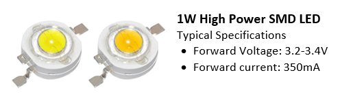
Driving LEDs (High-Current Load) using Power Transistor
As mentioned, the maximum output current an Arduino's digital pin can supply is 40mA (or 20mA continuous current). You cannot use it to drive more than two 20mA LEDs in parallel. Likewise, the digital pin outputs 5V. You cannot use it to drive 3 LEDs in series (2.2V*3=6.6V). Suppose that we want to drive many LEDs in parallel via a single Arduino's digital output pin, we need an external power supply and a power-transistor switch, which can switch amperes of current.
Choosing a Power Transistor
The LED applications, we typically choose a "TO-200" package power transistor, which can dissipate 1W, as shown below. You can attach an external heat sink if needed.
There are two types of transistors:
- Bipolar Junction Transistors (BJT): BJT has three terminals, marked as Base (B), Emitter (E) and Collector (C). BJT is a current-controlled device where the Base's current controls the current at the collector and emitter. There are two types of BJT: NPN and PNP. They are identical, except on the polarity.
- Metal Oxide Semiconductor Field-Effect Transistor (MOSFET): MOSFET also has three terminals, marked as Gate (G), Source (S) and Drain (D). Unlike BJT, MOSFET is a voltage-controlled device, where the Gate's voltage controls the current at the source and drain. There are two types of MOSFET, n-channel and p-channel.
MOSFETs are more common nowadays for high power applications, as they handle power more efficiently. BJTs are still used for low current applications (like switches), as they are cheaper.
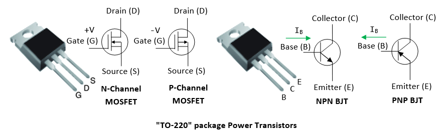For examples,
- IRLB8721PbF N-channel Power MOSFETs (Datasheet): can switch 30V of 16A (750 LEDs @ 20mA) with signal of 3.3V and 5V. Can dissipate up to 2 watts (400mA @ 5V) without a heat sink (at room temperature).
- IRF630 N-Channel Power MOSFET can switch 200V of 9A, VGS=20V. IRF520 N-Channel Power MOSFET can switch 100V of 9A.
- TIP120/121/122 NPN Epitaxial Darlington Transistor (Datasheet): TIP120/121/122 can switch 60/80/100V of 5A (250 LEDs @ 20mA).
Transistor as an Electronic Switch
A transistor can function as an amplifier (operating in active mode) or a switch (operating in saturation mode).
In this section, we shall focus on transistor as a switch. Just like a mechanical switch, you push it in to connect the circuit, and push it out to disconnect. A transistor can similarly serve as an "electronic" switch.
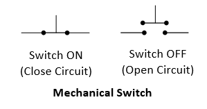N-Channel MOSFET as a Switch
An N-channel MOSFET can be served as a active-high voltage-controlled switch. You set the Gate (G) to HIGH to connect (switch-on) the Drain (D) and Source (S); and set the Gate (G) to LOW to disconnect (switch-off) Drain (D) and Source (S), as illustrated.

- The n-channel MOSFET is switched on when
VGS>VTH(threshold voltage). - When the transistor is switched on by setting
VIN=HIGH,VDS≈0.2V, andILis controlled by the current limiting resistorRL. Suppose that the load is 2.2V and 350mA,VDD=5V,RL=(5-2.2-0.2)V/350mA=7Ω. - When the transitory is switched off by setting
VIN=LOW,IL=0. - You may switch the position of
RLand the load. - MOSFET has an extremely high input resistance (almost infinite) making it possible to interface with nearly any logic gate or driver.
- It is common practice to place a high-value resistor
RGS(10KΩ to 1MΩ) between the gate and source. It is used to bleed-off the electric charge from the gate and turn off the MOSFET. Otherwise, very small currents from your finger, capacitive coupling, inductive coupling, etc, may change the gate voltage. - The Gate resistor RG is optional. A small resistor (100Ω) could be used to prevent ringing, by dampen the ringing.
Suppose that we are driving the following load:
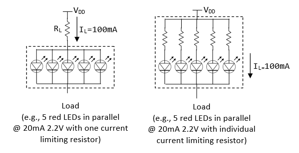Suppose that VDD=5V, RL=(5-2.2-0.2)V/100mA=26Ω.
P-Channel MOSFET as a Switch
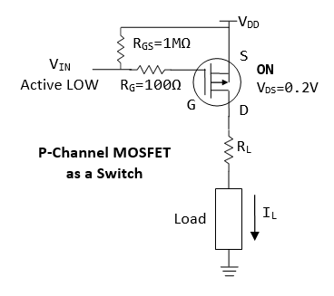Similar to N-channel MOSFET, but P-channel MOSFET is:
- Active LOW, i.e.,
Vin=0Vto switch on, orVSG>VTH(threshold voltage). - You can connect one end of the load to the ground.
- p-channel acts as a "high-side" switch, which is less popular than n-channel "low-side" switch.
- For n-channel, the Source (S) is connected to the Ground; for n-channel, Source (S) is connected to VDD.
NPN BJT as a Switch
For a NPN transistor, you set the base (B) to high (such that IB>ITH threshold current) to connect (switch on) the collector (C) and Emitter (E); and set the base (B) to low to disconnect (switch off) collector (C) and Emitter (E).
A NPN transistor functions as a current-controlled electronic switch, when it is operating in the so-called saturation mode:
- A small base current
IB>ITH(threshold current) turns on the transistor, results in current flowing thru the collector and the emitter (and the load). - If
IB=0, the transistor is switch OFF, results in no current flow thru the collector and emitter (and the load).
You may switch the position of the RL and the load.
We can turn ON an NPN transistor by setting VIN to high (say 5V), results in IB flowing from base to emitter. When the transistor is turn on, we can accept that VBE=0.8V and VCE=0.2V (recall that diodes are treated as current devices, with constant voltage). Suppose that VDD=5V and the desired IL=100mA, RL=(5-2.2-0.2)V/100mA=26Ω. To compute RB, we use IC=hFE*IB, where hFE is the amplification factor. We can use hFE=10 (or 20) at saturation region (amplification factor at saturation is much lower than active region). Suppose that VIN=5V, we have RB=(5-0.8)V/(100mA/10)=420Ω. If the transistor does not turn on, use a lower resistance value. (Note: These values serve as a starting point for your design, use a multimeter to measure the voltages and currents to fine tune the values.)
We can turn OFF an npn transistor by setting VIN to low (0V). In this case, IB=0, results in IC=0.
PNP BJT as a Switch
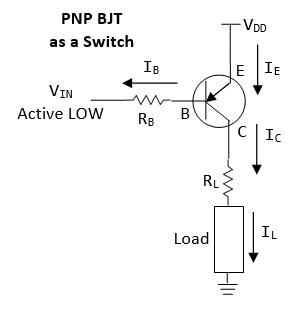- Active low (instead of active high for NPN).
- "high-side" switch (instead of "low-side" switch for NPN).
- One terminal of load can be connected to ground (instead of one terminal to VDD for NPN).
- Emitter connects to VDD (instead of Ground for NPN).
Exercises
Use a transistor (NPN BJT or N-channel MOSFET) to drive 5 LEDs in parallel. Use a multimeter, measure the currents and voltages.
LED Strips
An LED Strip (also known as an LED Tape or Ribbon Light) is a flexible circuit board populated by surface-mounted LEDs (such as 5050 SMD RGB LED module) and other components, and usually comes with an adhesive backing. Some strips are waterproof for outdoor applications.
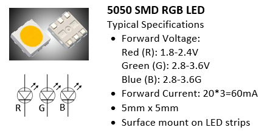LED strips can be classified as:
- Non-addressable (or Analog): You cannot control individual LEDs. All LEDs show the SAME color.
- Addressable (or Digital): Each segment has an Driver IC chip (containing latches and shift registers). You can control the color of each LED individually by sending serial digitally coded data to the chips, via the Data-In (DI) and an optional Clock-In (CI) leads, which propagates down the segments. They are more expensive.
An LED strip composes of identical segments. Each segment has 1-3 LED modules, with current limiting resistors. All segments are powered in parallel. LED strips typically operate on 12V (for 3 LED modules in series per segment) or 5V (for one LED module per segment). This is because an LED has forward voltage of 2.2-3.6V and 5V is not sufficient to drive more than one LEDs in series.
Each red, green and blue LED draws 20mA. Hence, full white draws 60mA. For a 20-RGB-module per meter, it draws 60mA*20=1.2A per meter, which is HUGE!!!
You CANNOT power the LED strips by the Arduino board (<500mA - not enough current). You need to connect to an external power supply.
Non-Addressable (Analog) 12V RGB LED Strip
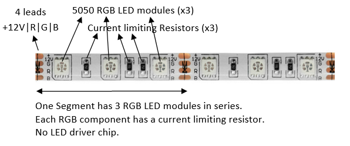 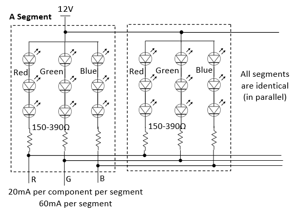- 4 leads, marked as +12V, G, R, and B.
- Each segment has three 5050 RGB LED modules connected in series, with common-anode (+) connected to 12V lead. Each component has a current limiting resistor (150-390Ω). All segment are connected in parallel.
- Given that the forward voltage of an LED is between 2.2-3.6V, three LEDs in series take 6.6-10.8V. Hence, you need a 9-12V supply to drive three LEDs in series. Each LED draws 20mA.
- Maximum 12V @ 60mA per strip segment.
- Each segment is 50mm or 100mm, i.e., 20 or 10 segment per meter. For 20 segments per meter, the maximum current is 1.2A per meter. (My own measurements for a 20 segments per meter RGB LED strip draws about 970mA @ 12V; and 370mA @ 9V (which is sufficiently bright.)
Transistor Driver
You need an external power source to drive the LED strip. You also need 3 Power Transistors (e.g., N-channel MOSFET or NPN BJT) to drive the current for each of the RGB components, as follows. The arduino pins are connected to RIN, GIN, BIN to switch on/off the RGB LEDs.
Arduino Connection
- Connect
RIN,GINandBINto Arduino pins; - Connect the 12V/GND to power supply;
- Connect the GND from power supply to arduino (to establish common ground).
To control the brightness and color of the LEDs, you can use PWM output to drive RIN, GIN and BIN to turn on/off the LED at the specified duty cycle.
[TODO] more
Addressable (Digital) RGB LED Strip
Some addressable LED strips have 4 leads, labeled as GND/DI/CI/+5|12V or GND/DO/CO/+5|12V. DI and CI stand for "Data-In" and "Clock-In"; while "DO" and "CO" stands for "Data-Out" and "Clock-Out". We need to connect to the "IN" end. The "OUT" end is used to cascade to the "IN" end of another strip.
There is an LED driver clip for each segment, which contains latches and shift registers. Data (thru DI) propagates through shift registers on each LED, using the clock at CI. The first LED driver reads the first 24 bits of data (8 bits each for Red, Green and Blue) on the DI, the second LED driver reads the next 24 bits, and so on.
Some addressable LED strips have only 3 leads, without the CI (Clock-In). In this case, you need to send the coded data in a specific timing (thru DI), typically at 800kHz or 400kHz.
Addressable LED strips come in 12V or 5V. For the 12V version, there are 3 LED modules in series for each segment. For 5V version, there is only one LED module per segment (This is because LED has forward voltage of 2.2-3.6V, 5V supply cannot drive more than one LED in series).
Connecting addressable LED strip is straight-forward:
- Connect the LED Strip's +12V/+5V and GND to an external power supply directly.
- Connect DI and CI to any of the Arduino's digital pins.
- Join the power supply's GND and Arduino's GND to establish a common ground (IMPORTANT!!!)
You can simplify your programming using library codes. There are two popular libraries for programming addressable LED strip: NeoPixel and FastLED (work with 3-wire and 4-wire chipset) - to be discussed below.
3-Lead 12V RGB Addressable LED Strip (WS2811) / 3-Lead 5V RGB Addressable LED Strip (WS2812)
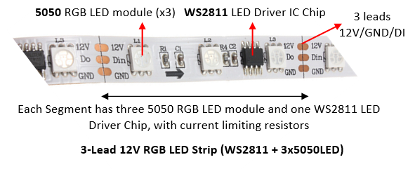 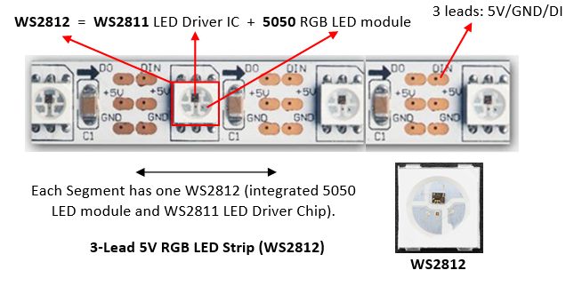- WS2812 is an integrated package of a WS2811 LED driver IC chip and a 5050 RGB LED per segment (the 5050 is a surface-mount 3-LED RGB module, in one 5mm x 5mm case). It can be driven by 5V supply. WS2812B is an upgraded version of WS2812.
- 12V RGB LED strips has three 5050 LED modules and a separate WS2811 LED driver IC chip (not integrated with 5050). You need 12V to drive three LEDs in series.
- For WS2812 5V RGB LED strip, as there is only one LED per segment, with a forward voltage of 2.2-3.6V, it can be powered by a 5V supply. The maximum current drawn per segment is 60mA (3x20mA per RGB LED). For a 60-segment per meter LED strip, the maximum current is 60mA*60=3.6A. You need an external 5V power supply, instead of drawing the current from the Arduino Board.
- For WS2811 12V RGB LED strip, the maximum current per segment is also 60mA. For a 20-segment per meter strip, it draws 1.2A per meter.
- The WS2812/WS2811 LED strip has 3 wires: +5V|+12V, GND, and Data-In (DI), without the Clock-In (CI). The controller WS2811 generates the Clock-In internally. You need to send the serial coded data via DI at a specific timing (400kHz or 800 kHz).
- Connecting the strip to Arduino is simple:
- Connect +5V|+12V and GND to an external power supply.
- Connect the power supply's GND to Arduino's GND.
- Connect the DI to any Arduino's digital pin.
Programming WS2811 LED drivers requires the 24-bit RGB color code for each pixel to be cascaded down the DI line until it reaches is intended location, at a specific timing. But this has been greatly simplified by using library codes. There are two popular libraries for programming addressable LED strip: NeoPixel and FastLED (described below).
Read https://www.tweaking4all.com/hardware/arduino/arduino-ws2812-led/.
4-Lead Addressable RGB LED Strip (LPD8806 Chipset)
Read https://learn.adafruit.com/digital-led-strip.
FastLED Wiki @ https://github.com/FastLED/FastLED/wiki/Overview.
Adafruit's LPD8806 library @ https://github.com/adafruit/LPD8806.
[TODO] diagram + code
Over Long Distance
The Arduino digital pins are unable to drive the LED strip over a long distance (e.g., 5m). A solution is to cut out a segment of LED strip, place it near the Arduino digital pin and use it as a driver to drive the LED strip over a long distance. The WS2811 in the LED strip is capable of driving over 10m, according to the specification, but in practice, a few meters.
NeoPixel
You can download the ZIP file from https://github.com/adafruit/Adafruit_NeoPixel. Unzip into Arduino's library folder. Restart Arduino IDE and check the examples at "File" ⇒ "Examples" ⇒ "Adafruit NeoPixel". Run and study the examples: "simple" and "striptest". The documentation is available @ https://learn.adafruit.com/adafruit-neopixel-uberguide/arduino-library-use.
You need to customize these lines:
#include <Adafruit_NeoPixel.h> #define DATA_PIN 6 // Data-In (DI) connects to this pin #define NUM_LEDS 60 Adafruit_NeoPixel strip = Adafruit_NeoPixel(NUM_LEDS, DATA_PIN, NEO_GRB + NEO_KHZ800);
In setup():
void setup() {
strip.begin(); // initialize strip's buffer to all zeros (off)
strip.show(); // Update all LEDs
}
You can then play with the color in loop():
// Set the color of a particular LED via setPixelColor() uint32_t color = strip.Color(255, 0, 0); // Set R, G and B of a color strip.setPixelColor(8, color); // Set LED 8's color strip.show(); // Update ALL LEDs delay(1000); // You can retrieve the color of a LED via getPixelColor() strip.setPixelColor(9, strip.getPixelColor(8)); strip.show(); // Update ALL LEDs delay(1000); // To switch an LED off use the color BLACK (0,0,0) strip.setPixelColor(8, strip.Color(0,0,0)); // Set LED color strip.show(); // Update all LEDs delay(1000); // Set all LEDs to green color = strip.Color(0, 255, 0); for (int i = 0; i < strip.numPixels(); ++i) { strip.setPixelColor(i, color); } strip.show(); // Update all LEDs delay(1000);
Run and study the other examples.
NeoPixel maintains a display buffer, which maps to all the LEDs in the strip. You need to call strip.begin() to set up the buffer. You can update the color in the buffer via strip.setPixelColor(index, color), and invoke strip.show() to push all the buffer values to the strip.
Color is represented in a uint32_t, comprising red, green and blue components.
strip.Color(R, G, B): translate the R, G and B into a color value in auint32_t.strip.setPixelColor(pixelIndex, color): set the color of a particular pixel.strip.getPixelColor(pixelIndex): returns a 32-bit color value of a particular pixel.strip.numPixels(): returns the number of pixel declared during initialization.strip.setBrightness(level): adjust the brightness of all the LEDs withlevelranges from 0 (off) to 255 (max brightness).setBrightness()was intended to be called once, insetup(), to limit the current/brightness of the LEDs throughout the life of the sketch. It is not intended as an animation effect itself!
NeoPixel seems to be easier in controlling multiple strips with varying number of LEDs, you can allocate different Adafruit_NeoPixel objects for different strips, and in an array control each of the strips independently.
[TODO] Check if NeoPixel works with 4-wire chipset (such as LPD8806) with Clock-In (CI)?
SRAM Constraint
Each LED pixel takes 3 bytes of SRAM.
Arduino UNO has 2KBytes of SRAM, and can drive 682 pixels even if all the SRAM is used for the LED buffer. In practice, it can drive about 300-400 pixels. Arduino Mega 2560 has 8KBytes of SRAM, and can drive 2730 pixels, but in practice, 1500+ pixels.
FastLED 3.1
FastLED is the successor of FastSPI_LED and FastSPI_LED2. You can download the ZIP file from https://github.com/FastLED/FastLED. Unzip into the Arduino's library folder. Restart the Arduino IDE. You can find the examples under "File" ⇒ "Examples" ⇒ "FastLED". Run and study examples such as "testleds" and "blink".
FastLED supports 4-wire and 3-wire chipset, with or without Clock-In (CI). You need to customize these lines:
#include "FastLED.h" #define NUM_LEDS 60 // Number of LEDs in your LED strip #define DATA_PIN 6 // Data-In (DI) connecting to this pin // For four-wire chipsets with a Clock-In (CI) only //#define CLOCK_PIN 7 // Clock-In (CI) connecting to this pin // Define an array of LEDs to keep the RGB values of each LED
CRGB leds[NUM_LEDS];
In setup():
void setup() {
// For 3-wire chipsets without Clock-In (CI)
FastLED.addLeds<NEOPIXEL, DATA_PIN>(leds, NUM_LEDS); // or set to WS2812 or WS2811
....
// For 4-wire chipsets with a Clock-In (CI)
//FastLED.addLeds<LPD8806, DATA_PIN, CLOCK_PIN>(leds, NUM_LEDS);
}
You can then play with the color in loop():
// To switch an LED Off, set the color to Black for that particular LED and call the show() function: leds[8] = CRGB::Black; // Array index begins at 0, up to NUM_LEDs - 1 // Set color to black via pre-defined constant CRGB::Black FastLED.show(); // Show changes // Set an LED to a specific color leds[8] = CRGB::Red; // Set LED 8 to red via pre-defined constant CRGB::Red FastLED.show(); // Show changes delay(1000); // You can set each of the RGB components individually leds[18].r = 255; // Set red component, value between 0 and 255 leds[18].g = 125; // Set green leds[18].b = 0; // Set blue FastLED.show(); // Show changes, no change in leds[8] delay(1000); // Set all LEDs to pre-defined constant ForestGreen (0x228B22) for (i = 0; i < NUM_LEDS; ++i) { leds[i] = CRGB::ForestGreen; } FastLED.show(); // Show changes delay(1000);
Run and study all the other examples.
Motors
Motor Ex 1: DC Motor and Transistor (for driving larger load)
Follow "CIRC03 Spin Motor Spin" @ http://www.oomlout.com/oom.php/products/ardx/circ-03.
Circuit Diagram
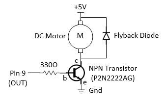Dissecting the Circuit
A transistor (P2N2222AG NPN BJT, rated at 40V and 200mA max) (datasheet) is used as an electronic switch in the above circuit. It is turned ON when pin 9 (connected to the base (b) of transistor) outputs a HIGH (5V), with base current IB = (5V-0.8V)/330Ω = 13mA; and voltage drop across collector (c) and emitter (e) of 0.2V. It is OFF when pin 9 is LOW (0V).
A transistor is needed here as the output from pin 9 (with maximum current of 40mA) is not sufficient to drive the DC motor directly. But only a small amount of current (2mA) is required to turn on the transistor.
A DC motor spins at a rate proportional to the applied voltage (once sufficient voltage is applied) at no load. The speed decreases when load is applied. The current is also proportional to the torque. (See DC Motor Tutorials.)
DC motors have various specifications. A toy DC motor has an operating voltage range of 1.5 to 4.5V and a no load speed of 23000 RPM (@4.5VDC, 70mA) (datasheet); another has an operating voltage range of 1.0 to 3.0V and a no load speed of 6600 RPM (@1.0V DC, 110mA) (datasheet). Generally, it requires around 100mA and cannot be supplied via output pin (max of 40mA). The transistor has a rating of 200mA.
Practice
Connect the DC motor directly to 5V. Measure the no load current.
Set pin 9 to HIGH (to turn on the transistor):
- Using a digital multimeter, measure the voltage at pin 9, the voltage across the base and emitter VBE. Compute the base current IB (through the base resistor).
- Measure the voltage across the collector and emitter VCE.
- Measure the collector current IC.
Motor Ex 2: Servo Motor
Follow "CIRC04 Servo" @ http://www.oomlout.com/oom.php/products/ardx/circ-04.
Dissecting the Circuit
A servo motor (sample datasheet) is a rotary actuator that allows for precise control of angular position, velocity and acceleration.
Sensors, Actuators and Other Devices
Shift Register
Follow "CIRC05 Shift Register" @ http://www.oomlout.com/oom.php/products/ardx/circ-05.
Piezo Speaker
Follow "CIRC06 Piezo speaker" @ http://www.oomlout.com/oom.php/products/ardx/circ-06.
Push Button
Follow "CIRC07 Push Button" @ http://www.oomlout.com/oom.php/products/ardx/circ-07.
Potentialmeter
Follow "CIRC08 Potentialmeter" @ http://www.oomlout.com/oom.php/products/ardx/circ-08.
Practice
Use a multimeter, measure the resistance across the entire potentiometer. (Mine is 10 kΩ).
Photo-Resistor
Follow "CIRC09 Photo-Resistor" @ http://www.oomlout.com/oom.php/products/ardx/circ-09.
Practice
Use a multimeter, measure the resistance of the photo-resistor at darkness (by covering the surface) and at full brightness (shine light on it). (Darkness: 60 kΩ; brightness: 3 kΩ).
Temperature Sensor
Follow "CIRC10 Precision Temperature Sensor" @ http://www.oomlout.com/oom.php/products/ardx/circ-10.
Relay (for large load)
Follow "CIRC11 Larger Load Relay" @ http://www.oomlout.com/oom.php/products/ardx/circ-11.
Real-Time Clock (RTC) Module
Reference:
- "DS1307 Real Time Clock Breakout Board Kit" @ https://learn.adafruit.com/ds1307-real-time-clock-breakout-board-kit/overview.
- "RTCLib" @ https://github.com/adafruit/RTClib.
- "DS1307" Data Sheet @ https://datasheets.maximintegrated.com/en/ds/DS1307.pdf.
Arduino has a built-in timer for time keeping, which you can read via function millis(), which returns the number of milliseconds (in unsigned long) since the current program is launched. However, it is reset to zero, when the power is turned off and on, or the program is reset.
For consistent timekeeping, we could use a Real-Time Clock (RTC) module (such as DS1307), that has a small lithium battery (3V CR1225 or CR1220) to keep the timer running (for up to 5 years) even if the Arduino is powered off. The RTC chip is a specialized chip that just keeps track of time. It can count leap-years and knows how many days are in a month, but it does not handle daylight savings Time.

RTC DS1307 can be connected to Arduino easily. There are five wires:
- 5V (Primary Power Supply): Used to power the RTC chip for querying time. When the 5V is absent, the battery is still powering its internal timer. Connect to Arduino's 5V pin.
- GND (Ground): Connect to Arduino's GND pin.
- SCL (Serial Clock Input): Connect to Arduino UNO's A4; or Arduino Mega's digital 21.
- SDA (Serial Data Input/Output): Connect to Arduino UNO's A5; or Arduino Mega's digital 20.
- SQW (Square Wave): Optional square wave output. Most people don't use it.
The RTC is an i2c device, which uses 2 wires to communicate with Arduino UNO (SCL to A4, SDA to A5), for setting the time and retrieving it. It takes up 2 of the 6 analog inputs pins.
RTClib Arduino Library
Download the "RTCLib" from https://github.com/adafruit/RTClib, and unzip into Arduino IDE's library folder. Read the tutorial @ https://learn.adafruit.com/ds1307-real-time-clock-breakout-board-kit/overview.
Example
Run and study example "ds1307", touched up as below:
#include <Wire.h> // Built-in library for i2c communication #include "RTClib.h" // RCTLib RTC_DS1307 rtc; // Declare an instance void setup () { Serial.begin(57600); // Enable serial for debugging if (!rtc.begin()) { Serial.println("Couldn't find RTC"); while(1); } if (!rtc.isrunning()) { Serial.println("RTC is NOT running!"); // Sets the RTC to the datetime this sketch was compiled using the computer time rtc.adjust(DateTime(F(__DATE__), F(__TIME__))); // Or, sets the RTC with an explicit year, month, day, hour, minute, second //rtc.adjust(DateTime(2014, 1, 21, 3, 0, 0)); } } void loop () { // Read datetime DateTime now = rtc.now(); // Print time Serial.print(now.year(), DEC); Serial.print('/'); Serial.print(now.month(), DEC); Serial.print('/'); Serial.print(now.day(), DEC); Serial.print(" "); Serial.print(now.hour(), DEC); Serial.print(':'); Serial.print(now.minute(), DEC); Serial.print(':'); Serial.print(now.second(), DEC); Serial.println(); delay(2000); }
rtc.begin(): to establish communication. Return false if RTC is not found.rtc.isrunning(): Return false if RTC is not running.rtc.adjust(DateTime(__DATE__, __TIME__)): Set the RTC's time to your computer's time when the sketch was compiled. This is needed if you took out the RTC's battery, or re-synchronize the time. This is NOT needed if you power down the Arduino Board, as RTC's battery is still powering the RTC's timer.DateTime now = rtc.now(): Return the RTC's time in aDateTimeobject.now.year(),now.month(),now.day(),now.hour(),now.minute(),now.second(),now.dayOfTheWeek(): Get theDateTimeobject's components.
Ultrasonic Ranging Sensor HC-SR04
Reference:
- "Ultrasonic Sensor HC-SR04 and Arduino Tutorial" @ http://howtomechatronics.com/tutorials/arduino/ultrasonic-sensor-hc-sr04/.
- Arduino-HC-SR04-library @ https://github.com/bbkbarbar/Arduino-HC-SR04-library.
- "HC-SR04" datasheet @ http://www.micropik.com/PDF/HCSR04.pdf.
"A proximity sensor is a sensor able to detect the presence of nearby objects without any physical contact. A proximity sensor often emits an electromagnetic field or a beam of electromagnetic radiation (infrared, for instance), and looks for changes in the field or return signal."
HC-SR04 ultrasonic distance measurement sensor is a low-cost sensor that supports non-contact distance measurement from 2cm to 400cm (4m) with a ranging accuracy of up to 3mm. Take note the there is a minimum range of 2cm (i.e., you cannot cover the sensor, which blocks the Ultrasonic wave path). The measuring angle is 15 degrees.
Each HC-SR04 module has an ultrasonic transmitter, a receiver and a control circuit. It emits an ultrasound at 40KHz, which travels through the air and bounces back if there is an object or obstacle on its path. You can calculate the distance from the travel time and the speed of the sound (340 m/s = 0.034 cm/µs), as follows:
speed = distance / time distance (cm) = 0.034 (cm/µs) * time (µs) / 2 = 0.017 * timeInµs
HC-SR04 module has four pins: VCC (Power), TRIG (Trigger), ECHO (Receive), and GND (Ground). Connect the VCC and GND pins to Arduino's 5V and GND. Connect TRIG and ECHO to any Arduino's digital I/O pins.
In order to generate the ultrasound signal you need to set the TRIG HIGH for 10 µs. This will trigger an 8-cycle sonic burst which will travel at the sound speed (340 m/s) and bounce back to the ECHO pin. The ECHO pin will maintain HIGH for the duration (in microseconds) that sound wave traveled.
Example of Raw Source Code
/* * Using HC-SR04 Ultrasonic Ranging Sensor * Measurement Range is 2cm to 400cm (4m), 15 degree angle. */ #define RANGING_TRIG_PIN 4 // TRIG pin to any Arduino's digital pin #define RANGING_ECHO_PIN 3 // ECHO pin to any Arduino's digital pin unsigned long distanceInCm; // in cm void setup() { Serial.begin(57600); // Set up Ultrasonic Ranging Sensor pinMode(RANGING_TRIG_PIN, OUTPUT); pinMode(RANGING_ECHO_PIN, INPUT); } void loop() { // Get distance from ranging sensor distanceInCm = getDistanceInCm(); // Print for debugging Serial.print(distanceInCm); Serial.println("cm"); delay(1000); distanceInCm = getAverageDistanceInCm(); // Print for debugging Serial.print(distanceInCm); Serial.println("cm"); delay(1000); distanceInCm = getAccurateDistanceInCm(); // Print for debugging Serial.print(distanceInCm); Serial.println("cm"); delay(1000); } /* * Get distance in cm via the ranging sensor HC-SR04 */ unsigned long getDistanceInCm() { // Clear trigger signal for 2 usec digitalWrite(RANGING_TRIG_PIN, LOW); delayMicroseconds(2); // Set Trigger pin HIGH for 10 usec digitalWrite(RANGING_TRIG_PIN, HIGH); delayMicroseconds(10); digitalWrite(RANGING_TRIG_PIN, LOW); // Read Echo pin HIGH duration in usec, convert to cm // The speed of sound is 340 m/s = 0.034 cm/us // The ping travels out and back, need to divide by 2. return pulseIn(RANGING_ECHO_PIN, HIGH) * 0.017; } /* * Read distance in cm using the ranging sensor HC-SR04 * Return the average of 3 readings */ unsigned long getAverageDistanceInCm() { // Get the average of 3 readings unsigned long distances[3]; for (uint8_t i = 0; i < 3; ++i) { distances[i] = getDistanceInCm(); } return (distances[0] + distances[1] + distances[2]) / 3; } /* * Read distance in cm using the ranging sensor HC-SR04 * Take 5 readings, discard max and min and return the average of remaining three */ unsigned long getAccurateDistanceInCm() { unsigned long distances[5]; for (uint8_t i = 0; i < 5; ++i) { distances[i] = getDistanceInCm(); } unsigned long max = distances[0]; unsigned long min = distances[0]; for (int i = 1; i < 5; ++i) { if (distances[i] > max) max = distances[i]; if (distances[i] < min) min = distances[i]; } return (distances[0] + distances[1] + distances[2] + distances[3] + distances[4] - max - min) / 3; }
Take note that the minimum range is 2cm (you cannot cover the sensor, which blocks the wave path). Hence, readings of 0cm is invalid!
Debugging Tips
Use a multimeter to measure the voltage across the HC-SR04 VCC and GND. It ought to be 5V. Otherwise, some other components (such as LED strips) might have pull down the voltage.
Arduino Library
You can simplify your programming using an library. There are a few HC-SR04 library available:
- Arduino-HC-SR04-library @ https://github.com/bbkbarbar/Arduino-HC-SR04-library.
Example of Using Arduino-HC-SR04-Library
#include "hcsr04.h" // Using "Arduino-HC-SR04-library" #define RANGING_TRIG_PIN 4 // TRIG pin to any Arduino's digital pin #define RANGING_ECHO_PIN 3 // ECHO pin to any Arduino's digital pin HCSR04 sensor; // Declare an instance of HC-SR04 sensor unsigned short distance; // measured distance void setup() { sensor.init(RANGING_TRIG_PIN, RANGING_ECHO_PIN); // init } void loop(){ Serial.begin(57600); // Use serial port for display // One measurement distance = sensor.readDistanceInMm(); Serial.print("distance (instantaneous): "); Serial.print(distance); Serial.println("mm"); // Average of n measurements distance = sensor.readAvgDistanceInMm(2); Serial.print("distance (average of two): "); Serial.print(distance); Serial.println("mm"); // 5 measurements, but discard the max and min distance = sensor.readAccurateDistanceInMm(); Serial.print("distance (accurate): "); Serial.print(distance); Serial.println("mm"); delay(1000); }
Bluetooth Shields
Reference:
- Using the BlueSMiRF @ https://learn.sparkfun.com/tutorials/using-the-bluesmirf.
- Bluetooth Serial Terminal @ https://www.microsoft.com/en-us/store/p/bluetooth-serial-terminal/9wzdncrdfst8.
- Arduino and HC-05 Bluetooth Module Tutorial @ https://howtomechatronics.com/tutorials/arduino/arduino-and-hc-05-bluetooth-module-tutorial/.
- Arduino Bluetooth Basic Tutorial @ https://create.arduino.cc/projecthub/user206876468/arduino-bluetooth-basic-tutorial-d8b737.
There are many Bluetooth Shields available for Arduino. I have tried the followings:
HC-05 6-Pin Bluetooth RF Receiver Transceiver Module

The HC-05 is a class 2 Bluetooth module (10m range). It is pre-configured as a slave Bluetooth device with Baud rate of 38400 (older version at 9600), 8 data bits, No Parity, 1 stop bit (8N1). Once it is paired to a master Bluetooth device such as PC, smart phones and tablet, its operation becomes transparent to the user.
HC-05 can be powered by 3.6V to 6V. Hence, it can be powered by Arduino's 5V supply. However, the level of RX/TX is 3.3V, which is not compatible with Arduino's digital output of 5V. For RX input, you need to use a voltage divider (formed by a 10KΩ and a 20KΩ resistors) to bring 5V down to 3.3V. But the TX output of 3.3V can drive Arduino's digital input pin directly.
RN-41/RN-42 Sparkfun BlueSMiRF Gold/Silver Bluetooth Module

RN-41 is a class 1 device with range of 100m; while RN-42 is a class 2 device with range of 10m. They can be powered by 3.3V to 6V, and designed to work with 3.3V and 5V systems. Hence, they can be connected directly to Arduino (without Voltage Level Shifter). The baud rate is 2400 to 115200bps. The default baud rate is 115200, 8 data bits, no parity, 1 stop bit (8N1).
Data Mode vs. Command Mode
Bluetooth module operates in two modes:
- Command Mode: used to configure the Bluetooth module, such as device name, baud rate, Pin Code, etc. The HC-05 Bluetooth Module has a switch to enter the command mode.
- Data Mode: for data transfer between the Bluetooth module and the Arduino controller. The Bluetooth module acts as a transparent data gateway. Any data received over Bluetooth connection is routed to the TX pin. Any data sent to RX pin is piped out over Bluetooth.
Connection
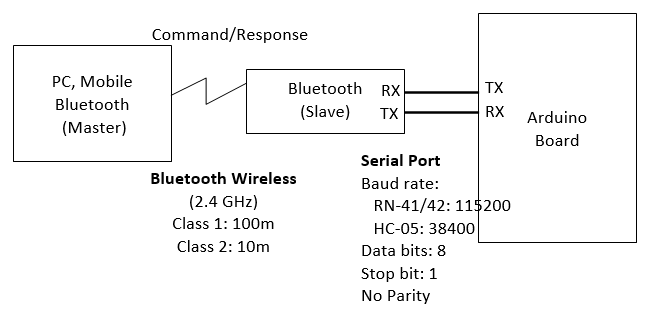Instead of connecting the Bluetooth to the Arduino's sore hardware Serial (Pins 0 and 1), we shall use SoftwareSerial and connect the bluetooth's RX and TX pins to any of the Arduino’s free digital pins. This will help to avoid bus contention and will make sure the Bluetooth doesn't receive any spurious data during a sketch upload. In our test program, we choose pin 2 for SoftwareSerial's RX and pin 3 for TX.
- Connect Bluetooth's RX to Arduino's TX.
- For HC-05, the bluetooth's RX is operating at 3.3V, you need a voltage divider (voltage level shifter). You can use a 1KΩ and a 2KΩ resistors to form a voltage divider to bring 5V down to 3.3V.
- For RN-41, no voltage level shifter is need as it can operate on 3.3V and 5V.
- Connect the Bluetooth's TX to Arduino's RX. No voltage divider is needed, as 3.3V is able to drive Arduino's 5V digital pin.
- Connect the Bluetooth's Vcc/GND to Arduino's 5V/GND (provided the bluetooth can be powered by 5V, otherwise, use Arduino's 3.3V output supply).
- Ignore the other pins.
Take note that you need to connect the Bluetooth's RX to Arduino's TX, and vice versa.
Arduino Test Program
The following program turns on/off Pin-13's built-in LED via command sent through a Bluetooth module. Send '0' to turn off and '1' to turn on.
/* * Turn on/off LED via command sent through a Bluetooth module * Send '0' to turn off and '1' to turn on */ // The default Serial uses pins 0 and 1 // Use SoftwareSerial to switch the TX/RX pins and leave pins 0 and 1 for debugging // Use built-in SoftwareSerial header @ https://www.arduino.cc/en/Reference/SoftwareSerial #include <SoftwareSerial.h> // Connect the Bluetooth's RX to Arduino's TX, Bluetooth's TX to Arduino's RX #define BT_RX_PIN 2 // Connect to Bluetooth's TX pin #define BT_TX_PIN 3 // Connect to Bluetooth's RX pin // Setup SoftwareSerial (RX, TX) SoftwareSerial bluetooth(BT_RX_PIN, BT_TX_PIN); #define LED_PIN 13 // Use Pin 13's built-in LED byte ledState = LOW; // HIGH or LOW char btCommandChar; // Bluetooth command character void setup() { // Set up bluetooth (choose your device) bluetooth.begin(115200); // default baud rate for RN-41/RN-42 //bluetooth.begin(38400); // default baud rate for HC-05 (older version at 9600) // Set up LED and Test LED by blinking thrice pinMode(LED_PIN, OUTPUT); for (int i = 0; i < 3; ++i) { ledState = LOW; digitalWrite(LED_PIN, ledState); delay(1000); ledState = HIGH; digitalWrite(LED_PIN, ledState); delay(1000); } // Start the serial communications for debugging Serial.begin(9600); Serial.println("LED ON and READY"); } void loop() { // Read bluetooth command, if available if (bluetooth.available()) { // Check if the bluetooth sends any characters btCommandChar = (char)bluetooth.read(); if (btCommandChar == '0') { // Turn off LED if (ledState == HIGH) { ledState = LOW; digitalWrite(LED_PIN, ledState); Serial.println("LED OFF"); // Debugging } } else if (btCommandChar == '1') { // Turn on LED if (ledState == LOW) { ledState = HIGH; digitalWrite(LED_PIN, ledState); Serial.println("LED ON"); // Debugging } } else { Serial.print("error: unknown command "); // Debugging Serial.println(btCommandChar); } } delay(1000); }
Testing on PC using "Bluetooth Serial Terminal"
There are many free Bluetooth Terminal available. I used the Bluetooth Serial Terminal (@ https://www.microsoft.com/en-us/store/p/bluetooth-serial-terminal/9wzdncrdfst8) which has PC and Mobile version to test the bluetooth module.
- Enable Bluetooth on PC: (Windows 10) Bluetooth & Other Devices ⇒ Bluetooth ON.
- Pair the bluetooth device: (Windows 10) Bluetooth & Other Devices ⇒ "Firefly 9AC4" (for RN-41), HC-05 (for HC-05) ⇒ Connect ⇒ Enter password (default "1234" or "0000").
- Upload the Sketch.
- Start "Bluetooth Serial Terminal" (or any Bluetooth Terminal): Connect.
- In "Transmit", enter "0" and "Send". Observe the the LED is turned off.
- In "Transmit", enter "1" and "Send". Observe the the LED is turned on.
Working with Android
[TODO]
RN-41 Bluetooth Module's Command Mode
You can use the following sketch to test the "command mode" of RN-41 Bluetooth module, via passing thru all data between "Arduino Serial Monitor" and "Bluetooth Module".
/* * Test Bluetooth module via passing thru all data between "Arduino Serial Monitor" * and "Bluetooth Module". */ // The default Serial uses pins 0 and 1 // Use SoftwareSerial to switch the TX/RX pins and leave pins 0 and 1 for debugging // Use built-in SoftwareSerial header @ https://www.arduino.cc/en/Reference/SoftwareSerial #include <SoftwareSerial.h> // Connect the Bluetooth's RX to Arduino's TX, Bluetooth's TX to Arduino's RX #define BT_RX_PIN 2 // Connect to Bluetooth's TX pin #define BT_TX_PIN 3 // Connect to Bluetooth's RX pin // Setup SoftwareSerial (RX, TX) SoftwareSerial bluetooth(BT_RX_PIN, BT_TX_PIN); void setup() { bluetooth.begin(115200); // default for RN-41/42 // == For RN-41/42 only == // Change the baud rate thru the command mode // 115200 can be too fast at times for SoftwareSerial to relay the data reliably bluetooth.print("$"); // Send "$$$" to enter command mode bluetooth.print("$"); bluetooth.print("$"); delay(100); // Short delay, wait for the Bluetooth to send back "CMD" bluetooth.println("U,9600,N"); // Temporarily Change the baud rate to 9600, no parity bluetooth.begin(9600); // Start bluetooth serial at 9600 // Start the serial communications for debugging Serial.begin(9600); Serial.println("READY"); } void loop() { // Pass all data from Arduino Serial Monitor to Bluetooth if (Serial.available()) { bluetooth.print((char)Serial.read()); } // Pass all data from Bluetooth to Arduino Serial Monitor if (bluetooth.available()) { Serial.print((char)bluetooth.read()); } }
- Upload the sketch.
- Open Arduino's "Serial Monitor". Set Baud rate to 9600. Choose "No Line Ending".
- Enter "$$$" ⇒ Send. You shall receive "CMD"
- Choose "Newline" for the Serial Monitor.
- Enter "D" ⇒ Send. You shall receive the "Settings" (such as BTName, Baud rate, Mode, Pin Code, etc.).
- Enter "E" ⇒ Send. You shall receive the "Advanced Settings".
HC-05 Bluetooth Module's Command Mode
To enter HC-05 command mode, you need to pull pin 34 to HIGH (at 3.3V). You can connect HC-05's pin 34 to Arduino's pin 9 (via a voltage divider) and set it to HIGH to enter the command mode. You can also PUSH the button while sending the AT command (the button is internally connected to pin 34).
In the command mode, HC-05 can process AT commands. For examples,
AT⇒OKAT+VERSION⇒ Display versionAT+NAME=MYBTNAME⇒ Set device nameAT+PSWD⇒ Display passwordAT+UART⇒ Display UART settingsAT+UART=115200,1,0⇒ Set UART baudrate = 115200, 1 stop bit, no parity
Again, we shall use the following pass thru program to test the command mode:
/* * Test Bluetooth module via passing thru all data between "Arduino Serial Monitor" * and "Bluetooth Module". */ // The default Serial uses pins 0 and 1 // Use SoftwareSerial to switch the TX/RX pins and leave pins 0 and 1 for debugging // Use built-in SoftwareSerial header @ https://www.arduino.cc/en/Reference/SoftwareSerial #include <SoftwareSerial.h> // Connect the Bluetooth's RX to Arduino's TX, Bluetooth's TX to Arduino's RX #define BT_RX_PIN 2 // Connect to Bluetooth's TX pin #define BT_TX_PIN 3 // Connect to Bluetooth's RX pin // Setup SoftwareSerial (RX, TX) SoftwareSerial bluetooth(BT_RX_PIN, BT_TX_PIN); void setup() { bluetooth.begin(38400); // default for HC-05 // Start the serial communications for debugging Serial.begin(9600); Serial.println("READY"); } void loop() { // Pass all data from Arduino Serial Monitor to Bluetooth if (Serial.available()) { bluetooth.print((char)Serial.read()); } // Pass all data from Bluetooth to Arduino Serial Monitor if (bluetooth.available()) { Serial.print((char)bluetooth.read()); } }
- Upload the sketch.
- Open Arduino's "Serial Monitor". Set Baudrate to 9600. Choose "Both NL and CR".
- Enter "AT", Push the button and "Send" ⇒ OK
- Enter "AT+VERSION", Push the button and "Send" ⇒ VERSION:2.0-20161226 ⇒ OK
- Enter "AT+UART", Push the button and "Send" ⇒ +UART:38400,0,0 ⇒ OK
Wifi Shield
[TODO]
MP3 Shield
[TODO]
Arduino Mega 2560
Arduino UNO has its limitations (e.g., it can drive about 300-400 LED pixels due to its 2KB of SRAM; it has limited number of I/O pins). Many of your project may require a more powerful Arduino Mega 2560 (which obsoleted the Arduino Mega).
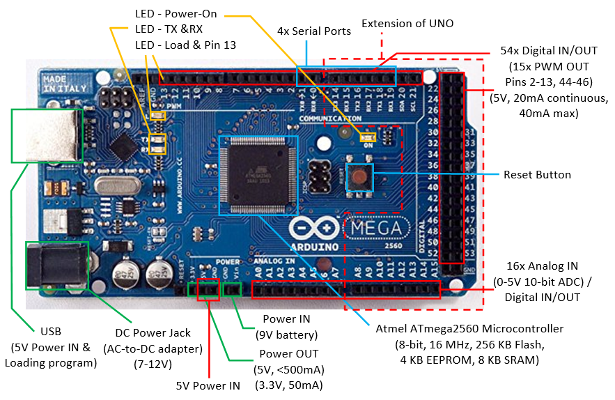Arduino Mega 2560 has:
- 54 digital I/O pins, of which 15 can be used as PWM outputs (pins 2-13, 44-46). Each pin could provide 20mA current. (Compared with Arduino UNO: 14 digital pins, 6 PWMs.)
Use functionpinMode(0-53, INPUT|OUTPUT)to configure the pin for input or output; anddigitalRead(0-53)ordigitalWrite(0-53, HIGH|LOW)to read or write.
For PWM pins, you can use functionanalogWrite(2-13|44-46, dutyCycle)with duty cycle of between 0 (off) to 255 (on) to output PWM signal. - 16 analog input pins. (Compared with Arduino UNO: 6)
Use functionpinMode(A0-A13, INPUT)(optional but nice to have) andanalogRead(A0-A13)to read the 10-bit analog input[0,1023].
These analog input pins can also be used for digital input/output like the digital I/O pins, with pin number for A0-A13. - 4 Serial ports (USART) (Compared with Arduino UNO: 1).
- ATmega2560 micro-controller @ 16MHz, with 256KB of Flash memory for program, 8KB of SRAM for data, and 4KB of EEPROM for non-volatile data.
Arduino IDE
Arduino IDE is applicable to Arduino Mega.
From "Tools" ⇒ "Board" ⇒ Select "Arduino/Genuino Mega or Mega 2560".
Open "File" ⇒ "Examples" ⇒ "01.basics" ⇒ "Blink", and run. Observe the orange LED attached to digital pin 13.
More on Arduino
Microcontroller
Arduino UNO uses ATmega328P microcontroller, with these features:
- Low-power CMOS 8-bit microcontroller based on the AVR enhanced RISC architecture.
- Advanced RISC Architecture:
- 131 instructions, most single-clock-cycle execution.
- 32x8 general purpose registers.
- Up to 20 MIPS throughput at 20MHz.
- Memory
- 32 KBytes Flash for program with 10,000 write/erase cycles.
- 1 KBytes EEPROM with 100,000 write/erase cycles.
- 2 KBytes SRAM
- Peripheral:
- Six PWM channels
- 6-channel 10-bit ADC
- One programmable Serial USART
- Two Master/Slave SPI Serial Interface
- One Byte-oriented 2-wire Series Interface (I2C compatible)
- Two 8-bit Timer/Counter with separate prescaler and compare mode
- One 16-bit Timer/Counter with separate prescalar, compare mode and capture mode
- Interrupt and wake-up on pin change
- Operating Voltage: 1.8V to 5.5V
- Power Consumption Active Mode @ 1MHz, 1.8V, 25°C: 0.2mA
Arduino Mega2560 uses ATmega2560 microcontroller.
- 8-bit microcontroller.
- [TODO]
Memory
Types of Memory
There are three pools of memory in Arduino board:
- Flash Memory: for storing the program (i.e., program space)
- SRAM (Static RAM): for storing program data and variables.
- EEPROM (Electrical Erasable Programmable Read-Only Memory): for storing long-term data.
Flash and EEPROM are non-volatile, i.e., the data stored persists even if the power is turned off. SRAM is volatile, i.e., the data stored is lost when the power is turned off.
Arduino UNO (ATmega328) has: 32KB of Flash (about 0.5KB is used for the bootloader), 2KB of SRAM and 1KB of EEPROM.
Arduino Mega2560 (ATmega2560) has: 256KB of Flash (about 8K is used for the bootloader), 8KB of SRAM and 4KB of EEPROM.
Take note that SRAM is very limited in Arduino UNO. For example, each LED in a LED strip requires 3 bytes of SRAM, 2KB of SRAM is only capable of support 682 LEDs, even if all the SRAM are used. If you run out of SRAM, your program appears to be loaded successfully, but not run or run strangely. To conserve SRAM:
- Use smaller data type, e.g., an
inttakes two bytes, but abyteoruint8_ttakes only one byte. - If you don't need to modify the data, store them in flash.
Programming EEPROM
EEPROM.length(): return total number of bytes of EEPROM.EEPROM.write(address, value): write a byte withvalueof 0 to 255 to the EEPROM ataddress. For example, to initialize and clear the EEPROM:for (int i = 0 ; i < EEPROM.length() ; i++) { EEPROM.write(i, 0); // write 0 to all the addresses }An EEPROM write takes 3.3ms to complete. The EEPROM memory has a specified life of 100,000 write/erase cycles, so you may need to be careful about how often you write to it.EEPROM.read(address): read the value (inbyte) from the EEPROMaddress.EEPROM.put(address, data): write any data type or object (struct) to the EEPROM starting fromaddress. Thedatacould be multi-byte, you can usesizeof(type)to check the size of data type in bytes.EEPROM.update(address, data): Similar toEEPROM.put(), but does not rewrite the value if it didn't change (Recall that EEPROM has a certain write/erase life).EEPROM.get(address, data): read any data type or object from EEPROM starting fromaddressintodata.
Delay and Timer
[TODO]
Serial Communication
All Arduino board has at least one serial port (aka UART or USART). It communicates on digital pin 0 (RX) and pin 1 (TX), as well as with the computer via USB (via USB-to-Serial adaptor). This serial port is represented by the Serial object. If you started serial, you cannot use pins 0 and 1. You can use Arduino IDE's Serial Monitor to communicate with Arduino board.
The Arduino Mega2560 has three additional serial ports: Serial1 on pins 18 (TX) and 19 (RX), Serial2 on pins 16 (TX) and 17 (RX), Serial3 on pins 14 (TX) and 15 (RX). There are NOT connected to the built-in USB-to-Serial adaptor, and you need an additional USB-to-Serial adaptor.
To use serial port, call Serial.begin(baudRate) or Serial.begin(baudRate, config) to set its speed and configuration (data, parity, stop bits). For example,
void setup() {
// open serial port, set baud rate to 57600
Serial.begin(57600);
// Arduino board writes to computer via serial port
Serial.println("Serial port started at baud rate of 57600");
}
The Serial's functions are:
Serial.begin(baudRate, [config]): setup serial communication.Serial.end(): Disable serial communication. Pins RX and TX can be used for general input/output.Serial.print(value, [format])andSerial.println(value, [format]): Prints data to the serial port as human-readable ASCII text, with an optional format.Serial.println()terminates with a newline. For examples,Serial.print(123); // 123 Serial.print(1.23); // 1.23 Serial.print("Hello"); // Hello Serial.print(123, DEC); // 123 Serial.print(123, HEX); // 7B Serial.print(123, OCT); // 173 Serial.print(123, BIN); // 01111011 Serial.print(1.2345, 2); // 1.23 (2 decimal places) Serial.print(1.2345, 3); // 1.234 (3 decimal places)
Serial.write(value): Write binary data thru the serial port. The data is sent as a byte or a series of bytes. Useprint()to send human-readable form.Serial.available(): Get the number of bytes (characters) available for reading from the serial port.Serial.read(): Read the first byte (inint) of the incoming serial data (or -1 if no data is available).void setup() { Serial.begin(57600); } void loop() { char inChar; if (Serial.available() > 0) { inChar = (char)Serial.read(); // Read one byte (in int) Serial.println(inChar); // Format in ASCII text Serial.println(inChar, DEC); // Format in DEC } }Serial.peek(): Return the next byte (inint) of the incoming serial data without removing it from the internal serial buffer (or -1 if no data is available).Serial.flush(): wait for the transmission of outgoing serial data to complete.serialEvent(): Call back function when serial data is available. UseSerial.read()to read the data. Read "serialEvent tutorial".
Interrupts
Polling vs. Interrupt
There are two ways for handling external inputs: polling and interrupt.
- In polling, you constantly poll the status of the external inputs and invoke the processing routine when the input is triggered.
- In interrupt, you attach an interrupt service routine (ISR) to an external input. The ISR will be invoked when the input is triggered.
External Interrupt Pins
In Arduino UNO, 2 pins (2 and 3) can be used for external interrupts and mapped to INT0 and INT1. In Arduino Mega2560, 6 pins (2, 3, 18, 19, 20, 21) can be used for external interrupts.
Interrupt Service Routine (ISR)
ISRs are special functions that cannot have any parameters and return nothing. If there are multiple ISRs, only one can be run at a time, other interrupts will be invoked after the current one finishes, in an order that depends on their priority.
Since millis() replies on interrupt to count, it will never run (and increment) inside an ISR. delay() also requires interrupt and won't work inside ISR. Serial data may be lost. Global variables are used to pass data between main program and ISR. They should be declared as volatile (so that they are stored in RAM rather than register for multithreading).
Keep the ISR as short as possible. It shall update some global variables (volatile) to indicate state change.
To attach an ISR to an interrupt pin, use:
attachedInterrupt(digitalPinToInterrupt(pin), ISR, mode)
The modes are:
LOW|HIGH: trigger when the pin isLOWorHIGH.CHANGE: trigger when the pin changes value.RISING|FALLING: trigger on the rising and falling edge.
For example,
const byte ledPin = 13;
const byte interruptPin = 2;
volatile byte state = LOW;
void setup() {
pinMode(ledPin, OUTPUT);
pinMode(interruptPin, INPUT_PULLUP);
attachInterrupt(digitalPinToInterrupt(interruptPin), toggle, CHANGE);
}
void loop() {
digitalWrite(ledPin, state);
}
void toggle() {
state = !state;
}
Enable/Disable Interrupts
You can use noInterrupts() to disable all the interrupt, and interrupts() to re-enable all the interrupts. These could be useful for real-time applications, where certain critical, time-sensitive code need to be run. For examples,
void loop() {
......
noInterrupts();
// critical, time-sensitive code here
interrupts();
......
}
Pin-Change Interrupt
As discussed, pins 2 and 3 can be used for external interrupts and triggered on HIGH|LOW|CHANGE|RISING|FALLING. On the other hands, all the 20 pins can be set to trigger on RISING|FALLING signal edge. However, there are only 3 interrupt vectors (subroutines) for all the 20 pins and you need to resolve the triggering pins.
Arduino Language Reference
Data Types
Arduino supports these data types. Take note that int is 16-bit, long is 32-bit, float and double are 32-bit.
- Integer:
byte: 8-bit unsigned integer in the range of[0,255].short: 16-bit signed integer in the range of[-32768,32767], same asint.int: (for Arduino UNO and Mega) 16-bit signed integer in the range of[-32768,32767].unsigned int: (for Arduino UNO and Mega) 16-bit unsigned integer in the range of[0,65535].long: 32-bit signed integer in the range of[-2147483648,2147483647].unsigned long: 32-bit unsigned integer in the range of[0,4294967295].
- Character:
char: in ASCII code, represented as 8-bit signed integer in the range of[-128,127].unsigned char: 8-bit unsigned integer in the range of[0,255], same asbyte.
- Floating Point:
float: 32-bit floating point.double: (for Arduino UNO and Mega) 32-bit floating point, same asfloat.
- Boolean:
bool: holds a value of eithertrueorfalse. Occupied one byte of memory)boolean: same asbool.
- String: Strings can be represented in two ways: null-terminated
chararray orStringobject.- null-terminated
chararray: for example,char str1[8]; // 7-character plus '\0' char str2[8] = {'a', 'r', 'd', 'u', 'i', 'n', 'o', '\0'}; char str3[8] = "arduino"; // terminated with '\0' char str4[] = "arduino"; // length is 8
Stringobject: for examples,String strObj1 = "hello world"; String strObj2 = String(123); String strObj3 = String(123, HEX); String strObj3 = String(123, BIN);
Stringobject has these functions:aStr.length(): returns the length of the string in characters, excluding the terminating null character.aStr.charAt(unsigned int idx): returns the char at the given index. String character index begins at 0.aStr.equals(String anotherStr): returnbooloftrue/false.aStr.substring(unsigned int fromIdx, unsigned int toIdx): return the substring fromfromIdx(inclusive) totoIdx(exclusive).aStr.toLowerCase(),aStr.toUpperCase():aStr.indexOf(str|char): returns the index of the given substring or character; or -1 if not found.- more
- null-terminated
You can use these functions to perform type conversion: byte(), char(), float(), int(), long().
You can use sizeof() to check the size of data type, variable and array. For examples,
int myInt;
Serial.println(sizeof(myInt));
Serial.println(sizeof(int));
char myStr[] = "hello world";
for (int i = 0; i < sizeof(myStr) - 1; ++i) { // exclude terminating '\0'
Serial.println(myStr[i]);
}
int myIntArray[8];
for (int i = 0; i < sizeof(myIntArray)/sizeof(int); ++i) {
Serial.println(myIntArray[i]);
}
Literals
- Integer Literals:
- Base: For examples,
123(base 10),b1011(base 2 with prefix'B'or'b'),0123(base 8 with prefix'0'),0x123abc(base 16 with prefix'0x'or'0X'). - Type: By default, an integer literal is treated as
int. You can use suffix'u'or'U'forunsigned int(e.g., 123u), suffix'L'or'l'forlong, and suffix'ul' or'UL'forunsigned long.
- Base: For examples,
- Floating Point Literals: for example,
12.3,-4.5,1.23e4,-1.234E-5.
Constants
Arduino defines these constants:
boolconstants:trueorfalse.- Digital pin levels:
HIGH(>3.0V on 5V board) orLOW(<1.5V on 5V board). - Digital pin modes:
INPUT,OUTPUT,INPUT_PULLUP. LED_BUILTIN: built-in LED pin number (Pin 13 for Arduino UNO and Mega).
Variable Scope and Qualifiers
const: constant, cannot be modified.constis preferred over#define.volatile: direct the compiler to load the variable in RAM instead of register. This is useful in multithreading for concurrent access. For Arduino, it is used in Interrupt Service Routine (ISR).static: astaticvariable inside a function persists beyond the function calls and preserving its value between function calls.
Programming Constructs
if,if...else,if...elseif....elseif...else:switch...case:for:while,do...while:break,continue:return:#define:#include:- Arithmetic Operators:
+(addition),-(subtraction),*(multiplication),/(division),%(modulo),++(increment),--(decrement). - Comparison Operators:
==(equal to),!=(not equal to),<(less than),<=(less than or equal to),>(greater than),>=(greater than or equal to). - Boolean Operators:
&&(logical AND),||(logical OR),!(logical NOT). - Bitwise Operators:
&(bitwise AND),|(bitwise OR),~(bitwise NOT),^(bitwise exclusive OR),<<(bitshift left),>>(bitshift right). - Assignment:
=(assignment),+=,-=,*=,/=,%=(compound assignment),&=,|=,^=(compound bitwise assignment). - Pointers:
*(dereference operating),&(reference operator).
Built-In Functions
setup(),loop():- Digital IO:
pinMode(),digitalRead(),digitalWrite(). - Analog IO:
analogRead(),analogWrite(),analogReference(). - Advance IO:
tone(pin, frequency, [duration]),noTone(): create a square wave of the specifiedfrequency(unsigned int) (and 50% duty cycle) on a pin, for the optionaldurationin milliseconds (unsigned long).pulseIn(pin, HIGH|LOW, [timeout]),pulseInLong(): Read a pulse (eitherHIGHorLOW) on a pin, until an optionaltimeout, and return the pulse in microseconds (unsigned long).shiftIn(dataPin, clockPin, MSBFIRST|LSBFIRST),shiftOut(dataPin, clockPin, MSBFIRST|LSBFIRST, value):
- Delay:
delay(),delayMicroseconds(): delay in milliseconds or microseconds. - Time:
mills(),micros(): the number of milliseconds or microseconds since the current program started. - Math:
pow(),sqrt(),sq(),max(),min(),abs(),map(),constrain(),sin(),cos(),tan(). - Random:
random(min|0, max),randomSeed(): returns a pseudo-random numbers betweenminandmax(exclusive) (inlong). - Characters:
isAlpha(),isDigit(),isAlphaNumeric(),isSpace(),isWhitespace(),isUpperCase(),isLowerCase(),isPunct(),isASCII(),isGraph(),isPrintable(),isHexadecimalDigit(),isControl(). - Interrupts:
interrutps(),nointerrupts(): - External Interrupts:
attachInterrupt(),detachInterrutp(): - Communication objects:
Serial,Stream. - USB objects:
Keyboard,Mouse.
Debugging Arduino Programs
Serial.println()|print()|write()
It is extremely DIFFICULT to debug Arduino programs. It is hard to build a debugger, as the program is run inside the Arduino board and NOT in your computer. There is no runtime error messages. Furthermore, the bug could be due to the external hardware or your software!!!
You could inspect the value of a variable inside the Arduino board by printing it back to your computer via serial port, using one of the following functions:
Serial.print(var)prints the value of a variable in human-readable ASCII texts.Serial.println(var)appends a new line at the end of the output.Serial.write(var)writes a raw byte.
The output is captured in the "Serial Monitor" (under "tools" menu) of Arduino IDE.
You need to include a Serial.open(9600) statement in the setup(), where 9600 (or 57600) is a typical serial transmission baud rate.
Atmel Studio
Atmel Studio is a free Arduino IDE, which you can set breakpoints and trace through the program.
[TODO more]
Arduino Projects
LED Cube
Circuit Diagram
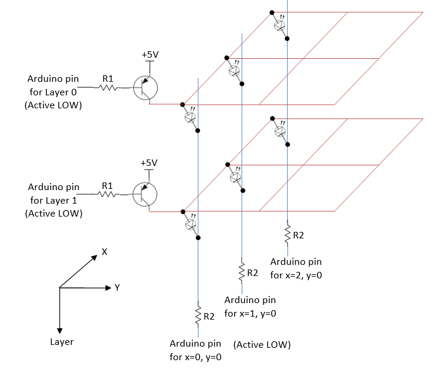Pin Counts
A 3x3x3 LED cube requires 3 layer pins + 3*3 column pins = 12 digital pins. For RGB, you need 3*3*3 = 27 column pins, with total of 30 digital pins.
A 4x4x4 LED cube requires 4 layer pins + 4*4 column pins = 20 digital pins. For RGB, you need 4*4*3 = 48 column pins, with total of 52 digital pins.
You could use an Arduino MEGA 2560, which has 54 digital pins (instead of Arduino UNO having 14 digital pins).
A 8x8x8 RGB LED cube requires 8 layer pin + 8*8*3 = 200 digital pins. You need to design a multiplexer circuit!
Computation of Resistors' Value
Assuming that only one layer is turned on at one time, VEC=0.2V, forward voltage and current of LED is 2.2V and 20mA respectively, then, R2=(5-0.2-2.2)V/20mA=130Ω. Suppose that hFE=10 (at saturation) and VEB=0.8V, we have IB=IC/hFE=2mA. Hence, R1=(5-0.8)V/2mA=2.1KΩ.
Dissecting the Circuit Diagram
- Your program shall turn on one layer at one time, via a refresh loop.
- Your program shall place the values of XY in a display buffer.
- When a layer is turn on (by setting the layer value low) and the XY is low, current flows from 5V thru the LED and turn on the LED.
- On the other hand, when the layout value is high, the entire layout is off.
Using Multiplexers
[TODO]
Musical Tree/Tubes
[TODO]
Clock/Timer
[TODO]
Miscellaneous
How to choose the wires
Reference: "Wire and Connections" @ https://learn.adafruit.com/wires-and-connections/overview.
Solid verses Stranded Wires
Solid wires are harder to bend and less flexible; but easier to insert into breadboard/connectors and easier to solder. Stranded wires are flexible but harder to make connections on the ends.
Wire Gauge and Sizes
Wire sizes are measured in standardized AWG (American Wire Gauge) which is related to the diameter of the wire. The smaller the gauge number, the larger is the diameter of the wire and the more current its can carry.
The rules of thumb are:
- Breadboards: Gauge-22 (5A) to Gauge-20 (6A). For starter, buy some Gauge-22 solid wires (Red, Black, and some colors) to work on breadboard.
- High current: If you need high current to drive large motor, many LEDs, or wearable, use thicker wire starting at Gauge-18 (9.5A) or Gauge-16 (13A) and lower.
- Household electrical power: Gauge-16 (13A)(Extension Cords) to Gauge-10 (30A)(Air-Conditioners. Ovens).
The voltage drop due to wire's resistance should not exceed 3% over the entire length. For example, for 12V, it should be at least 11.64V at the other end; for 5V, it should be at least 4.85V.
In Europe, wires are measured in metric (instead of AWG). E.g., 16/0.2 means 16 strands and 0.2mm diameter, which is roughly equivalent to AWG Gauge-20. Some typical specifications are:
- 16/0.2: 16 strands, 0.2mm diameter per stand, 1.6mm overall diameter, 1.55m cable diameter, 0.5mm2 cross sectional area, rating 1KV 3A (3KW) at 70°C, tinned copper conductor.
For DC circuit, use RED for power (Vcc) and BLACK for Ground (GND).
Connectors
How to twist two wires?
[TODO]
For AC Wires: Wire Nuts / Electrical Terminal Connector Strip
[TODO]
3-pin/4-pin LED Strip Connector
[TODO]
REFERENCES & RESOURCES
- Arduino mother site @ http://arduino.cc.
- Arduino github @ https://github.com/arduino/Arduino (source codes).
- Oomlout @ http://oomlout.com/oom.php (Arduino getting started tutorials).
- Sparkfun @ https://www.sparkfun.com (Electronic components with datasheets).
Electronic Components Store @ SG
- SGBotic @ http://www.sgbotic.com/.
- RS Components @ http://sg.rs-online.com/web/.
- Sing Lim Tower.